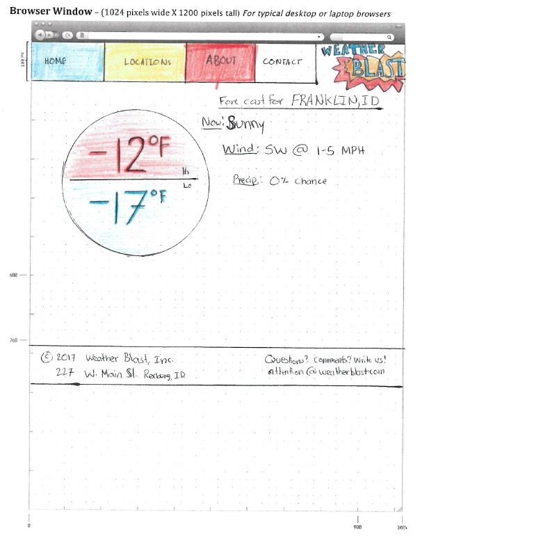
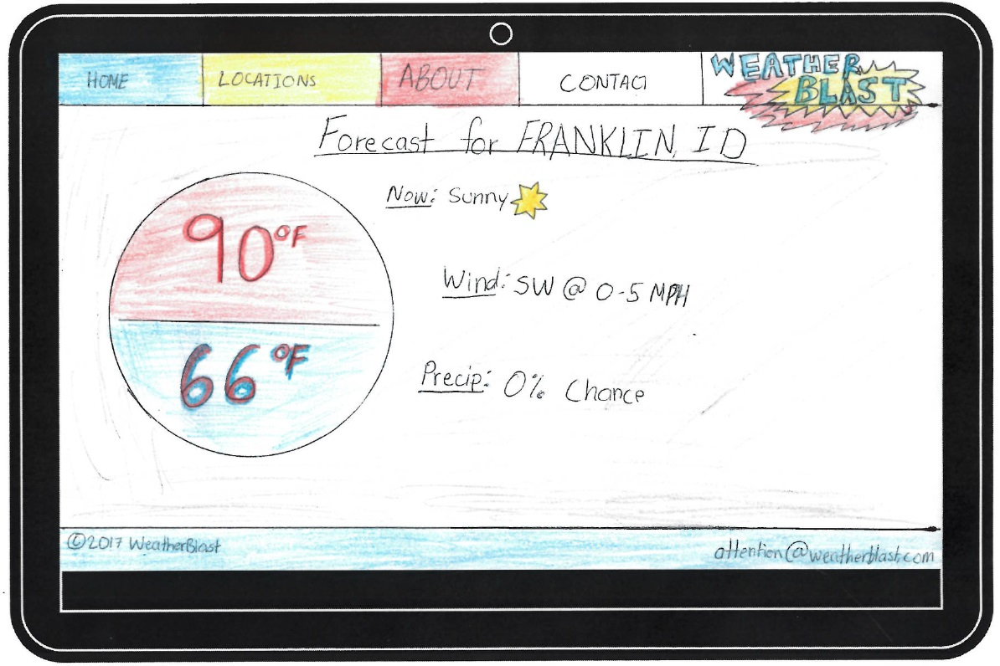
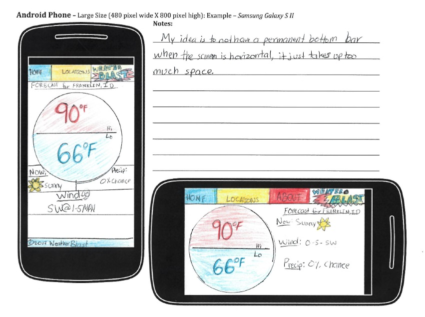

Site Purpose Statement
The purpose of this weather site is to display the weather for various locations. The users will be widely varied, as most people like to see what the weather will do at least once in a while. The site will show the weather forcast with the details of the city, state, high temperature, low temperature, precipitation, wind direction, wind speed, and summary. The goal of this website is to have information well laid out to make it easy to find at all times of the day, and to have people always coming back to our website because it loads quick, is accurate, and gives them what they are looking for.
Audience Description
Specifically, the site will be used by people who need to do something outside (like drive, walk, or play), and people with responsibilities who need to make decisions based on the weather. These responsabilities could be anything from a school district superintendent needing to decide if school should be held, to a farmer needing to know if they should go ahead and plant or fertilize, a parent needing to know how to dress up their kids for the day, or a business owner trying to decide how much of something they are likely to sell based on the weather. It is likely that the site will be accessed by people of all income levels and occupation types, all levels of education, young and old, living around the areas for which the weather data will be reported.
Audience Persona
Name: Emma Tyrdale
Age: 45
Gender: Female
Education: Two-year associate's degree from the local community college.
Professional Background:
Emma is a small business owner who excels at her ability to make people love her restaurant. She started the restaurant and works there every day. Her husband and kids help out sometimes but normally she runs the place. She is in charge of making the call of how much hot chocolate to prepare every winter day. She will visit the site every day, or even multiple times a day, to check the forecast and use it to determine how much of their famous hot chocolate to brew. She will likely be accessing the site from her phone because during the day she is always in a hurry, and there is no computer easily accessible in the restaurant.
Technical Background:
Emma is not especially tech-savvy, but loves what technology can do for her and her business in terms of making things go faster and smoother. She really likes it when websites are simple to use and don't have a bunch of junk you don't need, so that she can find what she is looking for.
Motivation:
Emma is looking to make good business decisions based on the data from the weather site. She needs good,reliable data, and she needs it quickly and often. She is motivated by her customers and her desire to not have a shortage of her product during the day.
Photo:
Sketches (Wireframes)
Desktop/Laptop View:
Tablet View:

Mobile Device View
